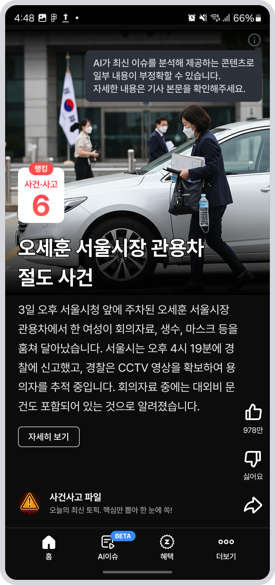
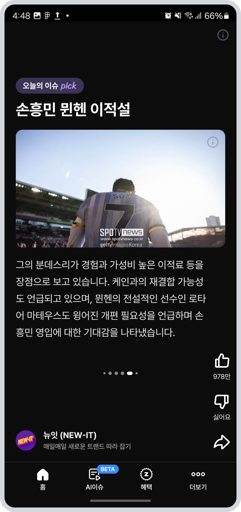

이스트에이드(구 줌인터넷)에 입사한 지 6개월이 지나 줌 앱 스쿼드로 조직을 이동하고 나서 첫 프로젝트로 숏츠 형식의 뉴스 기사 기능을 개발을 하게 됐습니다. 첫 기획안을 들었을 땐 정말 도전적이고 나중에 잘 되면 줌 앱의 코어 콘텐츠가 될 것이라는 생각에 의욕이 넘치면서 개발을 했었던 기억을 살리면서 Android 앱 개발 경험을 공유하고자 합니다.
기획, 개발, 디자인 모두 도전적이었던 프로젝트
뉴스 기사를 숏폼 형식, 그것도 뉴스 기사 그대로 가져오는 게 아니라 AI에 프롬프트를 입력하여 뉴스 기사를 요약한 콘텐츠를 보여주는 형식으로 기획안이 나왔습니다. 한 화면에 스크롤 없이 뉴스 기사 콘텐츠를 보여줘야 하기 때문에, 디자인과 개발 측면에서도 매우 도전적인 과제가 됐습니다.


그렇게 나온 2개 Type의 UI는 다음과 같습니다.
- A-Type : AI 프롬프트를 통해 요약된 뉴스 기사를 표시하고 상세한 내용은 자세히 보기를 눌러 볼 수 있게 하는 UI
- B-Type : 좌우 스와이프를 통해 뉴스 기사 본문을 보여주며 인디케이터로 현재 페이지 위치를 보여주는 UI
이렇게 나온 디자인을 기준으로 Android 가이드에서는 권장하진 않지만 Text의 크기를 sp 단위가 아닌 dp 단위로 조절하여 시스템 글자 크기에 영향이 가지 않도록 설정하는 것을 필두로 개발을 진행했습니다.
다양한 디스플레이 대응과 한계
Android는 매우 다양한 제조사와 다양한 디바이스를 가진 OS입니다. 그로 인해 디스플레이 형식 또한 매우 다양하기 때문에 이에 따른 대응이 필요했습니다.
Galaxy Fold 및 태블릿 대응
폴드는 접었을 때 가로 디스플레이가 작아지기 때문에 A-Type의 최대 표시할 수 있는 글자 길이는 4줄로 제한 후 Ellipsis 처리했고, 태블릿과 폴드에서 펼쳤을 땐 별도의 UI 처리 없이 좌우 여백을 주는 간단한 방식으로 유능한 동료 디자이너 분이 아이디어를 줘서 생각보다 간단하게 대응됐습니다.
Galaxy Flip 대응
플립에서 핸드폰을 접었을 때 보이는 작은 디스플레이는 별도의 대응을 하지 않도록 결론을 내렸습니다. 보통 플립의 작은 디스플레이 대응을 생각하여 웬만한 화면의 UI는 세로 스크롤이 가능한 LazyColum을 이용하여 개발을 했지만, 이와 별개로 숏폼 형식의 UI는 스크롤 제스처를 하면 바로 다음 페이지로 넘어가는 Pager 형식이기 때문에 대응이 매우 어려웠고 급박한 일정 때문에 연구할 시간이 없었기 때문에 플립은 추후 고도화 과정에서 대응하기로 했습니다.
다양한 사이즈의 디스플레이 대응
현재 사용하고 있는 휴대폰의 디스플레이 크기는 6.2인치 ~ 6.9인치 사이로 매우 다양합니다. A-Type의 형식의 UI는 Device Display 세로 길이를 가져와 특정 범위 내에서 글자 길이를 4줄 ~ 6줄로 제한하는 방식을 택하면서 대응을 했습니다.
Galaxy에서 해상도 조절 대응
위에 언급한 대로 정말 다양한 케이스에 대해 대응을 하여 어렵게 하나하나 미션을 완료했지만, 갤럭시 S+ 또는 Ultra 급에서 가능한 해상도 설정이라는 벽을 부딪치며 긴 글 형식의 숏폼 UI는 한계가 있다는 것을 느꼈습니다.
화면 해상도 설정에 따라서 DPI가 달라지며 이에 따라 글자 크기와 이미지 크기가 기존에 대응한 크기와 다르기 때문에 UI가 화면 아래로 넘어가서 보이지 않는 사이드가 발생했습니다. 오픈이 얼마 남지 않은 상태에서 어떻게든 해결 방법을 찾은 결과 어쩔 수 없이 핸드폰 해상도가 560 DPI 이상 설정이 되어 있다면, 앱 내에 해상도는 강제로 560 DPI로 설정해 주는 방법을 택할 수밖에 없었습니다. 그러기 위해서는 아래와 같이 AI 이슈 Fragment를 들고 있는 MainActivity에서 아래와 같이 Context가 Activity에 Attach 되기 전에 해상도를 고정하는 코드를 작성했습니다.
override fun attachBaseContext(newBase: Context?) {
val configuration = Configuration(newBase?.resources?.configuration)
val currentDensityDpi = configuration.densityDpi
configuration.densityDpi = if (currentDensityDpi >= DisplayMetrics.DENSITY_560 &&
Build.VERSION.SDK_INT >= Build.VERSION_CODES.Q
) {
DisplayMetrics.DENSITY_560
} else {
DisplayMetrics.DENSITY_DEVICE_STABLE
}
val context = newBase?.createConfigurationContext(configuration)
super.attachBaseContext(context)
}현재 앱 구조에서는 MainActivity에 Bottom Tab에 있는 4개의 메뉴에 각각 Fragment가 붙어있기 때문에 하나의 AI 이슈 탭을 위해서 위와 같이 해상도를 고정한다는 것은 어떤 사이드를 불러올지 모르는 매우 어려운 상황에 놓여 있었습니다. 다행히도 적용 결과 앱 전체적으로는 큰 사이드가 생기지 않았지만 해상도를 강제로 고정하는 것은 매우 위험하고 모험적인 방법이었습니다.
이번 프로젝트를 통해 배운 것들
지속적인 숏츠 형식의 AI 이슈 탭의 운영이 어려워 현재 줌 앱에서는 더 이상 숏츠 형식의 AI 이슈 서비스를 이용할 수 없어 아쉽지만, 이번 프로젝트를 통해 배운 점도 많았습니다.
긴글 형식의 숏폼 UI에서는 한계점이 존재
위에 언급한 내용을 기준으로 긴 글 형식의 숏폼 UI는 한계점이 명확하게 보였습니다. A-Type, B-Type 둘 다 뉴스 기사 내용은 최대 몇 줄로 표현해야 할지, 사용자 측면에서는 최대 몇 줄로 표현해야 불편함은 없을지 등등 여러 가지 UI/UX 관점과 개발 관점에서의 한계점이 존재한다는 것을 배웠습니다.
특정 Activity에서 DPI 고정 가능
dpi를 조절한 configration을 Activity에 attach 하는 context에 값을 넘겨주면 특정 Acitivity에서는 DPI가 고정이 가능합니다. 정말 특수 케이스가 아닌 이상 위와 같은 코드는 작성하지 않겠지만, configration을 내가 원하는 대로 커스텀 할 수 있다는 사실을 알게 됐습니다.
Compose Text의 onTextLayout의 활용성
좌우 스와이프를 통해 뉴스 기사를 보여주는 Type-B 같은 경우 한 인디케이터 페이지에 기사 본문은 최대 5줄까지 표현하며, 그에 맞게 문자열을 잘라야 하는 제약사항이 있었는데, 이를 Compose Text의 onTextLayout에서 TextLayoutResult(공식 문서)를 다음 과같이 활용하여 구현할 수 있었습니다.
- 휴대폰 디스플레이의 가로 사이즈가 각각 달랐기 때문에 투명한 색의 Text를 바깥쪽에서 최대 가로 길이를 설정한 UI 추가
- 디스플레이 바깥쪽에 위치한 투명한 Text의 onTextLayout 람다 안에서 각 라인의 first index와 end index를 뽑아와 한 줄씩 List에 순서대로 저장하여 값을 반환
- 직접 표시해 주는 Text에는 해당 인디케이터의 index와 각각 한 줄씩 있는 list와 데이터를 매핑하여 Text에 표시
이를 코드로 표현하면 다음 과 같습니다.
@Composable
fun LineMeasuredText(
maxLines: Int = 5,
onMeasured: (textList: List<String>) -> Unit,
) {
Text(
modifier = Modifier
.fillMaxWidth()
.offset {
IntOffset(Int.MAX_VALUE, Int.MAX_VALUE)
}
onTextLayout = { layoutResult ->
if (layoutResult.lineCount <= maxLines) {
onMeasured.invoke(listOf(text))
} else {
val textLineList = mutableListOf<String>()
var startLineIndex = 0
while (startLineIndex < layoutResult.lineCount) {
val lineStartIndex = layoutResult.getLineStart(startLineIndex)
val lineEndIndex = layoutResult.getLineEnd(startLineIndex)
val lineText = text.substring(lineStartIndex, lineEndIndex)
textLineList.add(lineText)
startLineIndex++
}
onMeasured.invoke(textLineList)
}
},
)
}Offset을 이용하여 좌우 Swipe 동작 시 화면 show, hide 구현
숏폼 계정 상세 페이지 진입 후 Back 또는 좌에서 우로 Swipe 했을 때 최상단에 있는 Compose UI를 왼쪽에서 오른쪽으로 들어가는 애니메이션을 구현해야 했습니다. 이를 Modifier의 Offset 설정과 horizontalScrollState 안의 람다에 있는 consumeScrollDelta 값을 적절하게 이용하여 계산해서 구현할 수 있었습니다.
현재 숏폼 형식의 AI 이슈는 운영되고 있지 않지만, 프로젝트를 마무리했다는 성취감과 많은 것을 배운 것에 대해 감사함을 느꼈었던 좋은 경험이었습니다.